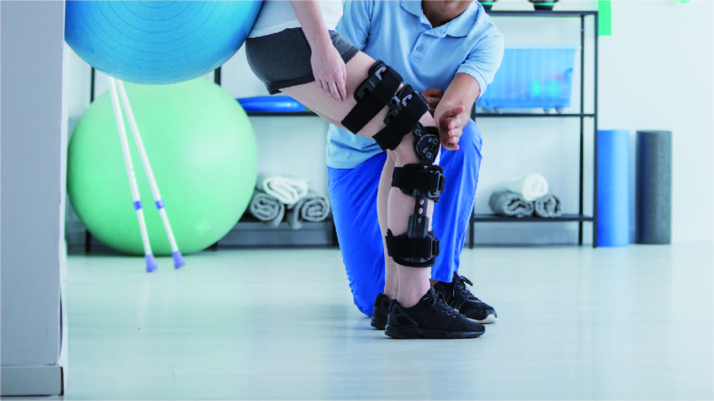
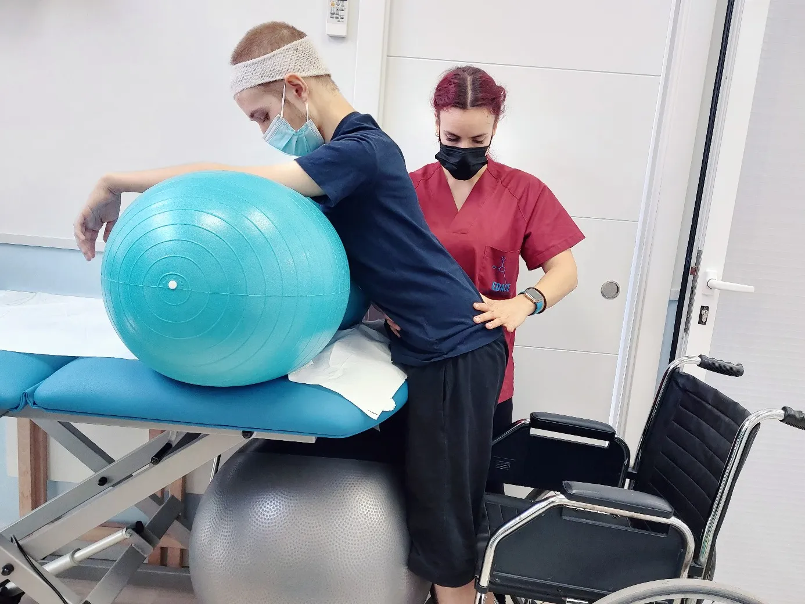
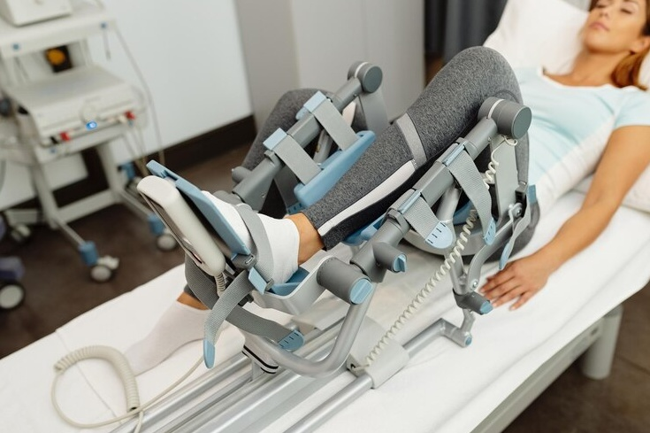

Nossa clínica oferece um cuidado completo e personalizado, atuando em diversas áreas da fisioterapia para promover sua saúde, bem-estar e qualidade de vida. Encontre abaixo o tratamento ideal para suas necessidades:

Fisioterapia Ortopédica e Traumatológica
- Dores na Coluna, hérnia de Disco e Ciatalgia
- Lesões de Joelho, Ombro e Quadril
- Pós-Fraturas e Luxações
- Tendinites e Entorses
Fisioterapia esportiva
- Prevenção de lesões musculares e articulares.
- Tratamento de "cotovelo de tenista" (epicondilite lateral) e outras lesões por esforço repetitivo.
- Reabilitação de estiramentos, contraturas e lesões ligamentares.

Fisioterapia neurológica
- Recuperação motora após Acidente Vascular Cerebral (AVC).
- Tratamento para Doença de Parkinson e Esclerose Múltipla.
- Reabilitação em casos de Lesão Medular e Traumatismo Craniano
- Tratamento de Paralisia Facial.

Reabilitação Pós-Operatória
- Reabilitação de Próteses de Joelho e Quadril.
- Pós-operatório de cirurgias de coluna
- Recuperação de cirurgias de ombro (manguito rotador) e joelho (reconstrução de ligamentos).

Fisioterapia geriatrica
- Melhora do equilíbrio e marcha para prevenção de quedas
- Tratamento de dores crônicas, como artrose e artrite.
- Aumento da força muscular e flexibilidade.
- Independência para atividades como caminhar, sentar e levantar.
Fisioterapia respiratória
- Atua na prevenção e tratamento de doenças que afetam o sistema respiratório.
- Reabilitação pulmonar para pacientes com Asma, Bronquite Crônica (DPOC).
- Recuperação funcional em pacientes pós-COVID-19.
- Fisioterapia pré e pós-operatória de cirurgias cardíacas e torácicas.